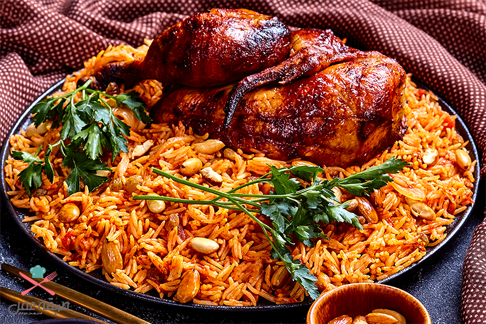
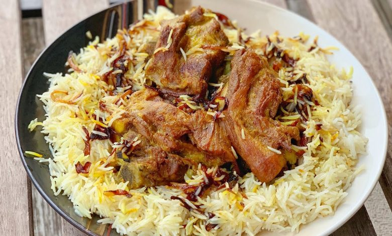
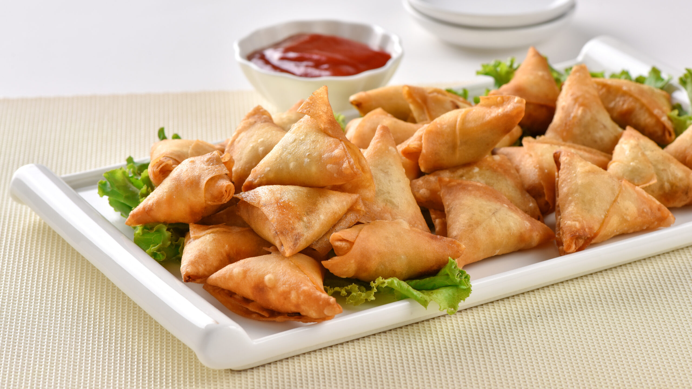
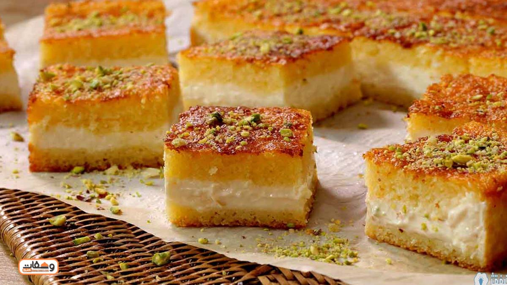

Yemekler
Etin bolca baharatlandığı bu yemekte pirinç de bulunuyor. Sağlıklı bir yemek olan Kabsa, Suudi Arabistan’ın her köşesinde lezzetle yenilen bir yemek. Suudi Arabistan’ın bu ulusal yemeğinin Makbus ve Kabsah gibi alternatif isimleri de bulunuyor. İsminin orijinali, Arapça da yemek yapım sürecinde kullandığınız bütün malzemelerin birlikte bastırılması anlamına gelen ‘kbs.’.
Kuzu ya da tavuk eti ve pirinçle yapıldığından Kabsa’ya oldukça benziyor. Yemen, Umman ve diğer Ortadoğu ülkelerinde de oldukça popüler bir yemek. Pişirme işlemi de Tandır olarak bilinen özel bir fırında yapıldığı için oldukça özeldir.
Yağda kızartılan atıştırmalığın içini istediğiniz gibi doldurabilirsiniz. Dünya genelinde Samboksa, Sambuus ya da Samosa isimleri ile de biliniyor. Sambusak’ın şekli Arap dünyasında yarı dairesel iken Hint yarımadasında ise üçgen şeklinde.
Popüler olarak Semolina pastası, Shamali, Hareesa olarak bilinir, güzel, küçük bir pastad Gül suyu ve portakal çiçeği suyunun eşlik etmesi nedeniyle ağır bir yemekten sonra tüketmek için mükemmel bir seçenek olarak karşımıza çıkıyor.